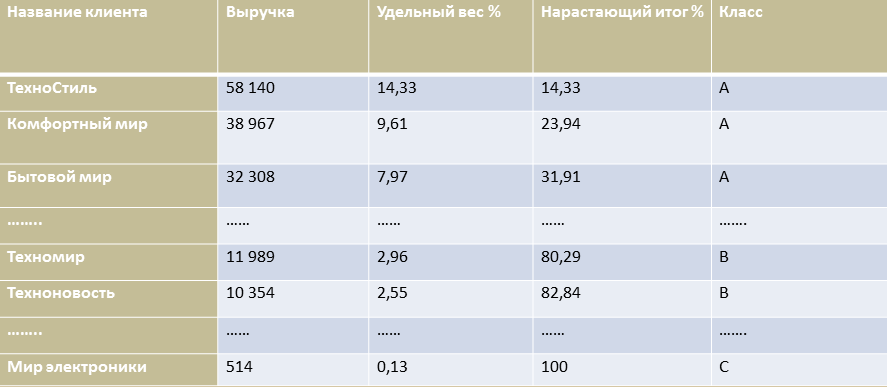

Обработка "Классификация"
Назначение
Обработка предназначена для задания параметров расчета ABC/XYZ классификации.
По каким показателям будет производиться расчет задается в "Настройках параметров учета", в разделе "Маркетинг". Параметры периодичности, задаваемые в обработке, позволяют указать за какой период необходимо анализировать клиента (общую глубину периода и частоту периодов, например, месяц или квартал). Обработка поддерживает два режима работы:
-
"Часто используемые возможности" — режим предоставляет простые средства для выполнения наиболее часто используемых действий связанных с ABC/XYZ классификацией. Режим позволяет «одним нажатием» выполнить действия, возникающие при обслуживании программы.
-
"Полные возможности" — предоставляет полный доступ к возможностям программы по настройке и управлению ABC/XYZ классификацией. Режим позволяет выполнять все операции связанные с ABC/XYZ классификацией.
Описание метода ABC/XYZ-классификации
В решении для ABC/XYZ-классификации применяется метод кумулятивной кривой (линии нарастающего удельного веса). Он заключается в построении на базе таблицы клиентов по удельному весу конкретного показателя (такими показателями являются выручка продаж и количество номенклатуры продаж) кривой взаимосвязи количественных и качественных значений. По участкам данного графика определяется список клиентов, которые имеют однородные показатели (для этих целей применяется метод касательных).
Поясним распределение клиентов по группам ABC на основе данных, которые можно получить отчетом "ABC/XYZ-классификация клиентов".

Показателем, на основе которого будет строиться ABC-классификация, является выручка от покупок клиентами за период, указанный в настройках классификации. Данные о выручке сортируются в порядке убывания и рассчитывается общая сумма выручки.
На основе этих данных определяется удельный вес выручки по каждому клиенту. Удельный вес выручки рассчитывается как отношение значения каждого показателя к итоговой сумме.
Например, для клиента "ТехноСтиль" показатель Уд.вес % будет равен (Выручка/Итого)*100 = 14,33 % Данные об удельном весе в колонке Нарастающий итог в % рассчитываются следующим образом. Информация о первом значении переносится, а все остальные колонки рассчитываются нарастающим итогом. Например, для клиента "Комфортный мир" нарастающий итог равен 14,33 + 9,61 = 23,94
 На основании данных таблицы нарастающих итогов строится график кривой взаимосвязи показателей. По горизонтали отображаются порядковые номера клиентов, а по вертикали - значения процентов, указанные в графе "Нарастающий итог". В данной кривой необходимо соединить прямой крайние точки и определить точку касания. Эта точка будет определять позиции, для которых характер накопления качественного критерия (в приведенном примере - это выручка) однороден. Эти позиции отнесены к группе A-класс. Аналогичным образом определяются позиции, которые будут отнесены к группам B-класс. Оставшиеся позиции относятся к группе C-класс.
На основании данных таблицы нарастающих итогов строится график кривой взаимосвязи показателей. По горизонтали отображаются порядковые номера клиентов, а по вертикали - значения процентов, указанные в графе "Нарастающий итог". В данной кривой необходимо соединить прямой крайние точки и определить точку касания. Эта точка будет определять позиции, для которых характер накопления качественного критерия (в приведенном примере - это выручка) однороден. Эти позиции отнесены к группе A-класс. Аналогичным образом определяются позиции, которые будут отнесены к группам B-класс. Оставшиеся позиции относятся к группе C-класс.
Для XYZ-классификации клиентов используется коэффициент вариации, который представляет собой отношение значения среднеквадратичного отклонения ряда к среднеарифметическому значению. На основании данных о выручке продаж считается коэффициент вариации. Данные о коэффициенте вариации показываются в отчете "ABC/XYZ-классификация клиентов". Чем меньше коэфициент вариации, тем стабильнее покупки клиентов.
Для распределения клиентов в соответствии с XYZ-классификацией применяется тот же метод, что и для ABC-классификации. То есть рассчитывается суммарный коэффициент вариации и удельный вес коэффициента вариации для каждой позиции. Затем строится таблица и график, соответствующий данным нарастающего итога удельного веса коэффициента вариации. На основании данных графика рассчитывается принадлежность той или иной позиции к соответствующей группе X-, Y- или Z-классификации клиентов.
«Маркетинг»